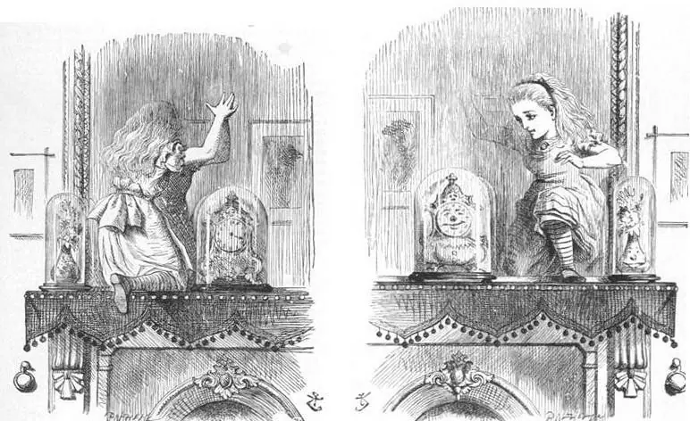
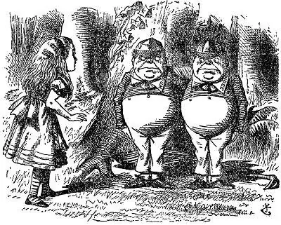
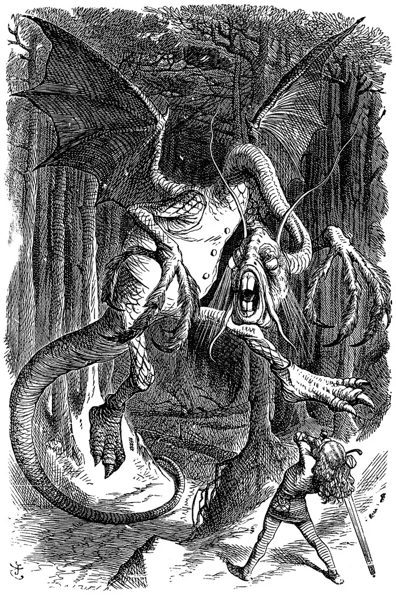
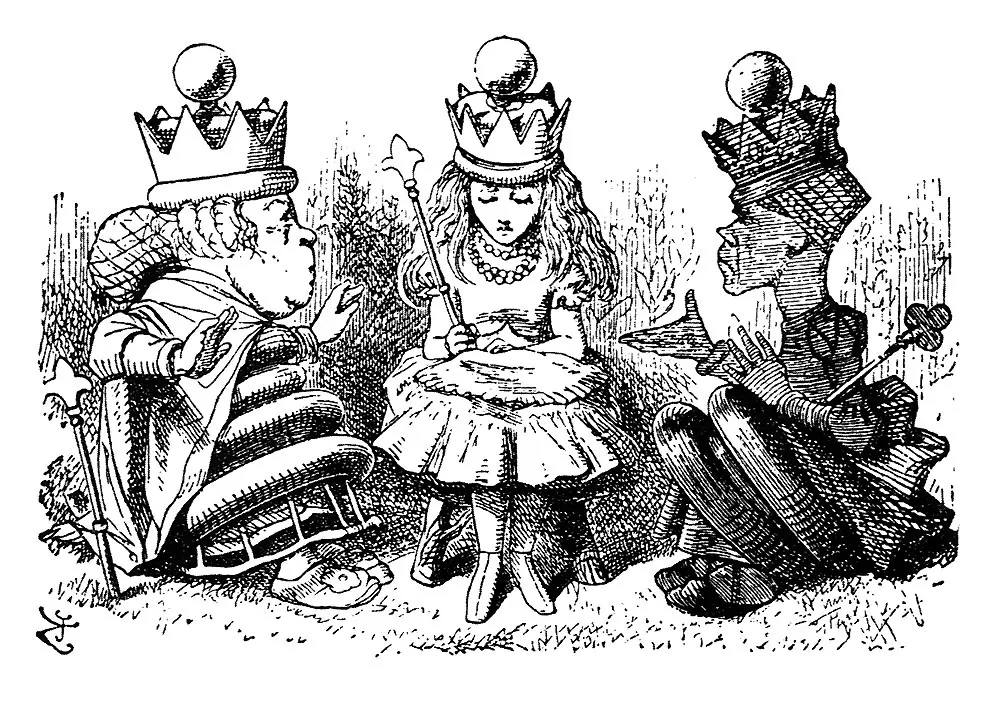

off the Faery Yurt · through the looking-glass · everything the other way round
Stimpunks.World · through the glass in the Faery Yurt
Looking-Glass House
Looking-Glass House
Everything comes back the other way round.
There is a looking-glass hanging in my yurt where the other rooms have wooden doors, and this is the other side of it. Everything you could see from the yurt is in here, back to front: the lattice, the lights, the candle. My yurt reads pale on dark; in here the glass gives it back dark on pale.
HOW LOUD DO YOU WANT IT?
Starts wherever your device says. In here MAX lets the candles in the glass glint, slowly. Everything on the mantelpiece works the same at every setting, and nothing in here ever flashes.
The other way round
Down the street there is a rabbit hole: you follow something into it, you fall, and it gets darker the further you read. This is the same story’s other book. Alice does not fall into Looking-Glass House. She climbs onto the mantelpiece, the glass goes soft like a silvery mist, and she steps through into a room that is her own drawing-room the wrong way round, where the books are printed backwards and the clock on the mantel has a face.
So this room is the Rabbit Hole in a looking-glass. The hole goes down; the glass goes through. The hole is pale on dark and darker as you go; the glass is dark on pale, and what is in it is somewhere you already know, given back so you see it fresh.
Carroll’s looking-glass world runs on rules that are perfectly good rules, just not the ones Alice brought with her: you walk away from a place to get to it, you run as fast as you can to stay where you are, and the cake is handed round first and cut afterwards. Alice keeps asking, and keeps going, and gets to the far side of the board.
The pin board
Lines from both Alice books, pinned up with red pins and white ones, like the two sides in the game. Each says who said it and where, so you can go and find it in the book.
“Curiouser and curiouser!”
Alice, Alice’s Adventures in Wonderland, chapter II
“Why, sometimes I’ve believed as many as six impossible things before breakfast.”
the White Queen, Through the Looking-Glass, and What Alice Found There, chapter V
“I could tell you my adventures—beginning from this morning,” said Alice a little timidly: “but it’s no use going back to yesterday, because I was a different person then.”
Alice, Alice’s Adventures in Wonderland, chapter X
“Now, here, you see, it takes all the running you can do, to keep in the same place.”
the Red Queen, Through the Looking-Glass, and What Alice Found There, chapter II
“Then it doesn’t matter which way you go,” said the Cat.
the Cheshire Cat, Alice’s Adventures in Wonderland, chapter VI
“When I use a word,” Humpty Dumpty said in rather a scornful tone, “it means just what I choose it to mean—neither more nor less.”
Humpty Dumpty, Through the Looking-Glass, and What Alice Found There, chapter VI
“Who in the world am I? Ah, that’s the great puzzle!”
Alice, Alice’s Adventures in Wonderland, chapter II
“if you’ll believe in me, I’ll believe in you. Is that a bargain?”
the Unicorn, Through the Looking-Glass, and What Alice Found There, chapter VII
“Everybody has won, and all must have prizes.”
the Dodo, Alice’s Adventures in Wonderland, chapter III
“The rule is, jam to-morrow and jam yesterday—but never jam to-day.”
the White Queen, Through the Looking-Glass, and What Alice Found There, chapter V
“Well! I’ve often seen a cat without a grin,” thought Alice; “but a grin without a cat! It’s the most curious thing I ever saw in my life!”
Alice, Alice’s Adventures in Wonderland, chapter VI
“Speak in French when you can’t think of the English for a thing—turn out your toes as you walk—and remember who you are!”
the Red Queen, Through the Looking-Glass, and What Alice Found There, chapter II
“Begin at the beginning,” the King said gravely, “and go on till you come to the end: then stop.”
the King, Alice’s Adventures in Wonderland, chapter XII
“Contrariwise,” added the one marked “DEE,” “if you think we’re alive, you ought to speak.”
Tweedledee, Through the Looking-Glass, and What Alice Found There, chapter IV
“Take care of the sense, and the sounds will take care of themselves.”
the Duchess, Alice’s Adventures in Wonderland, chapter IX
“It’s a poor sort of memory that only works backwards,” the Queen remarked.
the White Queen, Through the Looking-Glass, and What Alice Found There, chapter V
“I almost wish I hadn’t gone down that rabbit-hole—and yet—and yet—it’s rather curious, you know, this sort of life!”
Alice, Alice’s Adventures in Wonderland, chapter IV
“To be able to see Nobody! And at that distance, too!”
the White King, Through the Looking-Glass, and What Alice Found There, chapter VII
“Consider anything, only don’t cry!”
the White Queen, Through the Looking-Glass, and What Alice Found There, chapter V
Across the board
The country through the glass is marked out like a chessboard, with little brooks running across it and hedges between. Alice is a White Pawn, and Carroll worked the whole book out as a game: from the second square to the eighth, where a pawn becomes a Queen.
The second square
Up on a hill, the Red Queen shows Alice the country below, marked out in squares by little brooks and hedges like a huge chessboard, and says she can be a White Pawn and start here. Chapter II.
The third square, by railway
Alice does not walk the third square at all. She is in a railway carriage full of strange passengers who all think at once, and the train jumps the brook. Chapter III.
The fourth square: Tweedledum and Tweedledee
Two little fat men under a tree, one marked DUM and one marked DEE, who agree to have a battle and then argue about everything else. Chapter IV.
The fifth square: a shop, a river, a shop
The White Queen's shawl blows away, and she turns into a Sheep knitting in a little dark shop, and the shop turns into a boat, and the boat back into the shop. Chapter V.
The sixth square: Humpty Dumpty
An egg on a wall, who makes words mean what he chooses and explains Jabberwocky to her line by line. Chapter VI.
The seventh square: the forest
The Lion and the Unicorn fight for the crown, and then the White Knight, who keeps falling off his horse, sees her safely to the last brook. Chapter VII.
The eighth square: Queen Alice
She jumps the last brook, and there is something heavy on her head: a golden crown. The pawn has reached the far side of the board and is a Queen. Chapter IX.
On the mantelpiece
Three things Alice finds on the other side of the glass. Nothing here keeps anything you do or sends it anywhere.
A looking-glass book
Lying on the table, a book of poetry that Alice cannot read: every line runs the wrong way. Then she has an idea.
“Why, it’s a Looking-glass book, of course! And if I hold it up to a glass, the words will all go the right way again.” Alice, chapter I.
JABBERWOCKY.
’Twas brillig, and the slithy tovesDid gyre and gimble in the wabe;All mimsy were the borogoves,And the mome raths outgrabe.
The verse is the first of Jabberwocky, from chapter I, the only verse Carroll printed the wrong way round. A screen reader always hears it the right way round.
The writing glass
Write on this side of the glass and see it come back from the other.
Looking-glass
What you write stays on this page and is gone when you leave it. The reflection is the same words, so a screen reader is not read them twice.
The un-birthday clock
The clock behind the glass has a face, and it grins. Ask it.
Is it my un-birthday today?
Almost certainly. Humpty Dumpty worked it out with Alice: there are three hundred and sixty-four days in a year when you might get un-birthday presents, and only one for birthday presents. And if today is the one, happy birthday.
“A present given when it isn’t your birthday, of course.” Humpty Dumpty, Through the Looking-Glass, chapter VI.
Cuts from 1871
John Tenniel engraved the pictures for the first Through the Looking-Glass in 1871, six years after the cuts on the Rabbit Hole’s wall. He died in 1914, so these are out of copyright everywhere, and each scan says so on Wikimedia Commons. Every word beside them is ours, and none is cropped, tinted or filtered: black ink on white paper, which is what they look like even through a glass.

Both sides of the glass at once. On this side the clock is a clock. On the other side it is looking at you.
Wood engraving by John Tenniel for Through the Looking-Glass, 1871, chapter I. Public domain. The scan we used.

A pair who are each other's reflection, and argue about it.
Wood engraving by John Tenniel for Through the Looking-Glass, 1871, chapter IV. Public domain. The scan we used.

The creature in the poem Alice could only read in a mirror. It is the most frightening picture in either book, and it is wearing a waistcoat.
Wood engraving by John Tenniel for Through the Looking-Glass, 1871, chapter I. Public domain. The scan we used.

The eighth square. A crown, and two Queens explaining at once how to be one.
Wood engraving by John Tenniel for Through the Looking-Glass, 1871, chapter IX. Public domain. The scan we used.
Looking-Glass House is Helen Edgar’s, behind her yurt, asked for on 31 October 2026. Every word on the pin board, the verse in the book and the un-birthday line are Lewis Carroll’s, out of copyright everywhere, from Alice’s Adventures in Wonderland (1865) and Through the Looking-Glass, and What Alice Found There (1871), each read word for word in its chapter in Project Gutenberg’s texts (eBook #11 and eBook #12) on 31 October 2026. The engravings are John Tenniel’s, from 1871, each credited under it. Everything else, the drawings, the squares and the words beside the cuts, is ours.
Job marker — a red chess pawn lying on the floor
You have found a job marker. The Adventurer’s Guild is a shopfront on the street, and it posts jobs that send you round these rooms. Take the code below to its board and that job is done. Nothing here is scored, nothing expires, and one is a perfectly good number of jobs to do.